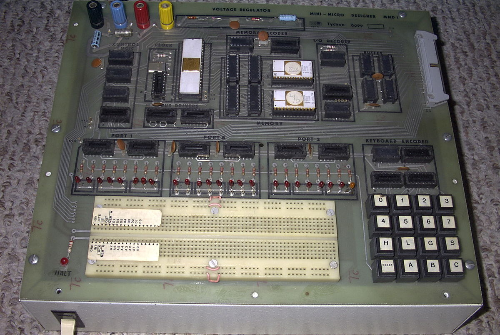

Systèmes embarqués « grand public »
Évolutions et tendances
Table of Contents
Un peu de vocabulaire
- SBC
-

Figure 1: MMD1 Prototype
Carte complète et autonome avec entrées/sorties
- SOM
-

Figure 2: DHCOM Computer on Module AM35x
Carte complète mais nécessitant un bus ou une extension
- SOC
-
Figure 3: AMD Geode LX 800
Chip plus puissant et plus complet qu'un microcontroleur « simple » (se rapproche d'un SOM)
Avant l'Arduino
- 1990
-
'{$STAMP BS2} '{$PBASIC 2.5} OUTPUT 14 DO HIGH 14 PAUSE 1000 LOW 14 PAUSE 1000 LOOPFigure 4: BASIC Stamp
Utilisation essentiellement académique, relativement chère (150€ avec les outils de développement), nécessite soudure headers etc.
2005 : Et l'Arduino fut
Premier écosystème complet avec
- SBC (Open-source hardware Logo OSH)
- IDE (basé sur Processing)
- Prix contenu (première cartes à ~25€)
{kind=link}
int led = 13; void setup() { pinMode(led, OUTPUT); } void loop() { digitalWrite(led, HIGH); delay(1000); digitalWrite(led, LOW); delay(1000); }
Écosystèmes inspirés/dérivés
Selon trois axes
Design carte (Shields)
Compatibilité avec les Shields
IDE
Utilisation directe de l'IDE Officiel arduino
Fonctions/prix
Carte et environnement différents mais similitudes fonctions et prix équivalent:
exemple minimaliste.
Familles de processeurs
- Atmel AVR (Arduino original)
- ARM Cortex-M (Cortex M0 et M4 en particulier)
- Intel x86
- Sparc V8 (utilisé pour NavSpark)
mBed (Sponsorisé par ARM)
- très bien implanté
- IDE en ligne
- Gamme complète
#include "mbed.h" DigitalOut myled(LED1); int main() { while(1) { myled = 1; wait(0.2); myled = 0; wait(0.2); } }
Raspberry A-B 1&2
Positionnement
- SBC entre l'arduino et le pc classique
- Prix contenu (35€)
- Accessibilité
Raspberry-like
- Design carte (gpio compatible) Example : Banana Pi
- Programmation
Tendances générales
- Rapprochement SBC généraliste/spécialisé (Raspberry/Arduino)
- Langages de haut niveau (python, go, node.js)
- Prix!
Et chez Microsoft
.NET Micro Framework (Support C#, VB sur Visual Studio)
- Plateforme .Net Gadgeteer
- FEZ Cerberus Mainboard
- Catalogue
using System.Threading; using Microsoft.SPOT.Hardware; public class Program { public static void Main() { OutputPort LED; LED = new OutputPort(Cpu.Pin.GPIO_Pin1, true); while (true) { LED.Write(!LED.Read()); Thread.Sleep(200); } } }
Windows 10 IoT
- Windows 10 Preview sur raspberry
- Possible support élargi sur SBC arduino-like ?